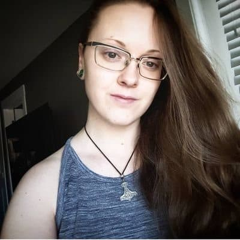

DesertWhale
Digital Artist & Streamer
Hi, my name is Jess.
I am certified in Adobe illustrator, Photoshop and InDesign; pursuing freelance graphic design, commissions and streaming on Twitch. Skilled in traditional and digital art and painting, currently experimenting with new and alternative programs to create stream elements, overlays, emote design and animations.
- Graduated from the Graphic Communications and Print Technology program at SAIT.
- Certified in Adobe Illustrator, Photoshop and InDesign.
- Currently working with a mix of new and old programs such as Clip Studio Paint, Krita and Adobe Illustrator.
- Graphic Design, banners, backgrounds, posters, panels, resumes, avatars, emotes and much more.
- Branding, logos, themes, character and background design.
- Large canvases, Acrylic paint, colored pencil, graphite, markers, oil paint, pen and ink, pencils watercolors etc.
- Main focus is gaining experience and expanding my portfolio while I pursue the ability to work from home and follow my passion.
- Over 10 years of experience with skilled communication customer service.
My interests include Traditional and Digital Art, Video Game Design, Painting, Graphic Design, Layout & Typography, Business Cards, Advertisements, Posters, Logos, Resume Design, Emotes, Streaming, Illustration, Animation, Video making, all forms of Art and Animation.
If you like my work please consider donating or contacting me for a commission.
Supporting me here will allow me to continue pursuing my dreams creating content working from home, I love you, and your support is appreciated more than you know.
DonateMy Monthly Goal: